All 7 NeetCode 150 heap / priority queue problems, one picture each
Open a problem to see its picture: the question, the main idea (the obvious way vs the smart way), a walkthrough, the code, and why it works.
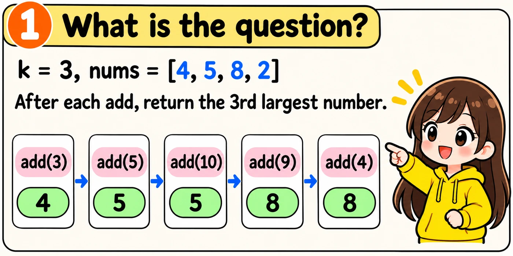
A heap is a list that keeps its smallest number on top. Python's heapq module gives us three tools.
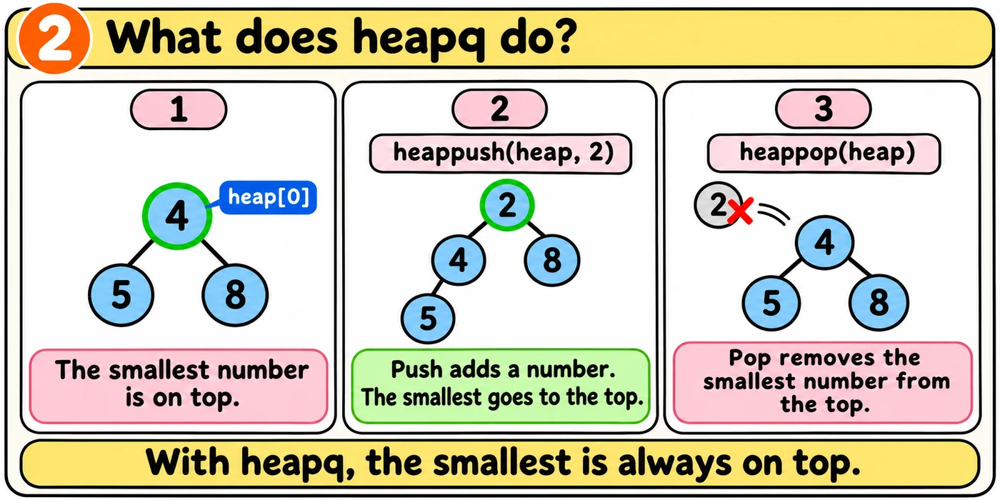
A push and a pop each take O(log n) time. Reading heap[0] takes O(1) time. A heap with the smallest number on top is a min-heap.
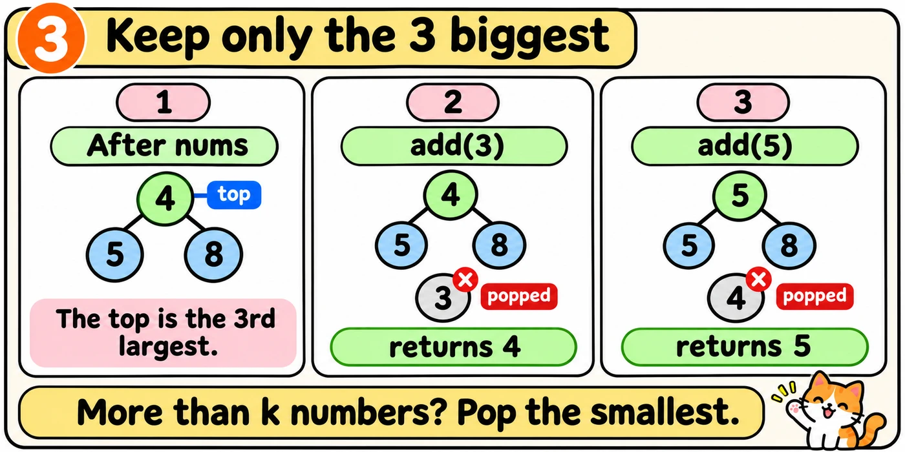
We keep only the k biggest numbers in the heap. We pop the smallest when the heap has more than k numbers. The top is then the k-th largest.
The method __init__ calls add for every number in nums. So the heap keeps only k numbers there too.
Tap Build it to see how I would write and explain this in an interview.
The one idea to remember
Write the whole class from memory. The comments explain each job. A failed test gives a hint instead of the answer.
The class and the first two lines of __init__ are already written. Fill in the two gaps. Start each gap at the left edge.
import heapqclass KthLargest: def __init__(self, k, nums): self.k = k self.heap = []
def add(self, val):
return self.heap[0]
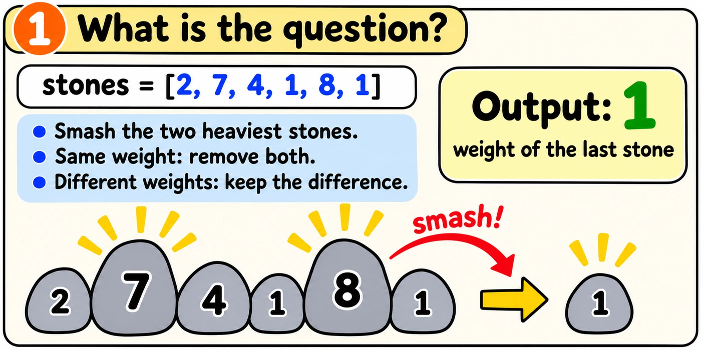
If no stone is left, we return 0.
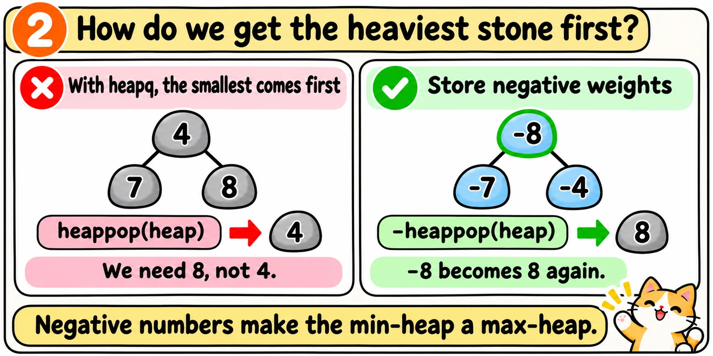
Later lessons use the same negative number trick.
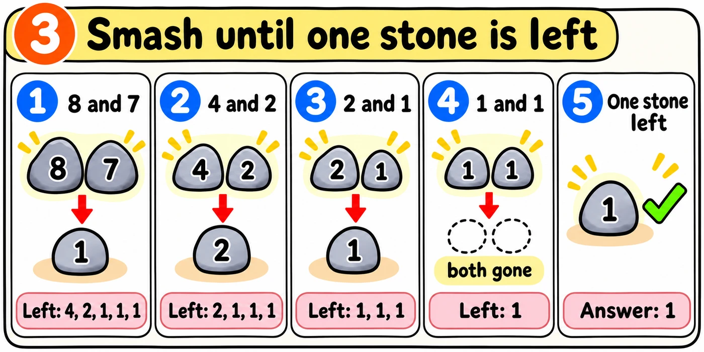
Tap Build it to see how I would write and explain this in an interview.
The one idea to remember
Write the whole function from memory. The comments explain each job. A failed test gives a hint instead of the answer.
The heap is already built. Fill in the smashing loop. Start at the left edge.
import heapqdef lastStoneWeight(stones): heap = [] for stone in stones: heapq.heappush(heap, -stone)
if heap: return -heap[0] return 0
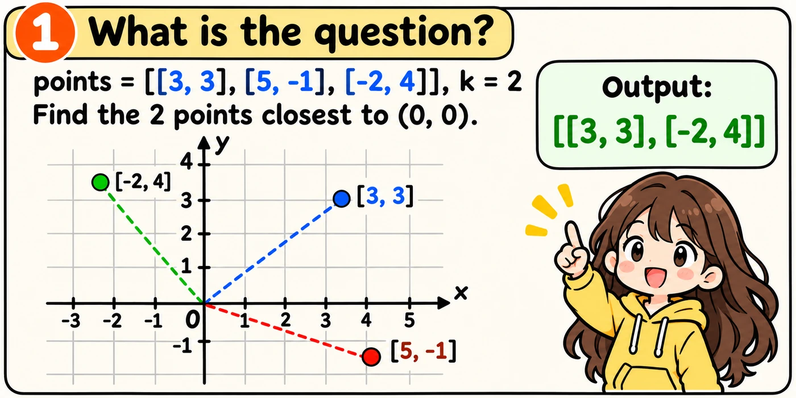
The points can be in any order.
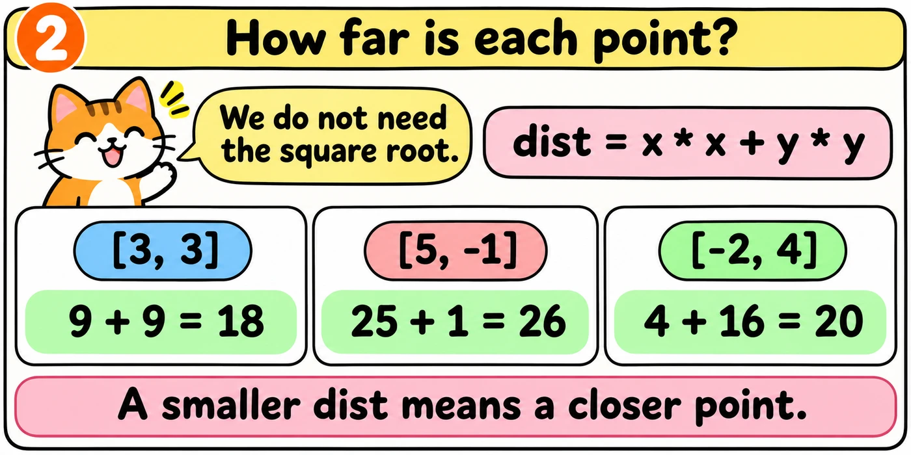
Skipping the square root does not change which point is closer.
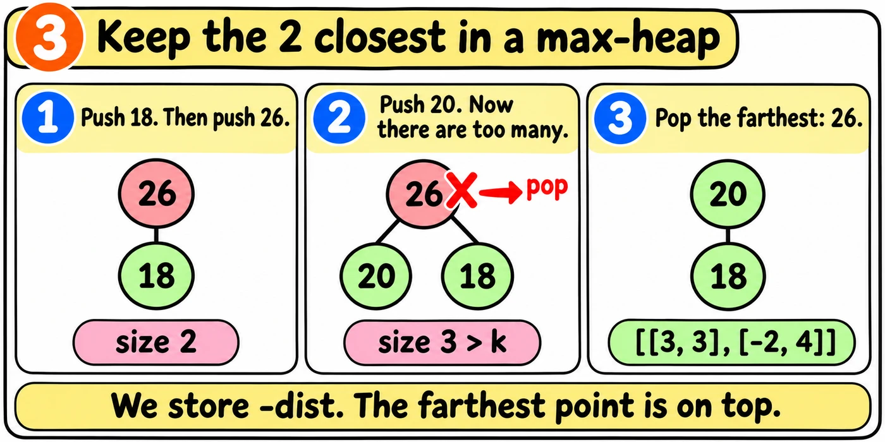
We used the same negative trick in Last Stone Weight.
Each heap item is a tuple (-dist, x, y). Python compares the first values first. So -dist controls the order.
Tap Build it to see how I would write and explain this in an interview.
The one idea to remember
Write the whole function from memory. The comments explain each job. A failed test gives a hint instead of the answer.
The loop over the points is already written. Fill in the two gaps. Start each gap at the left edge.
import heapqdef kClosest(points, k): heap = [] for x, y in points:
closest = []
return closest
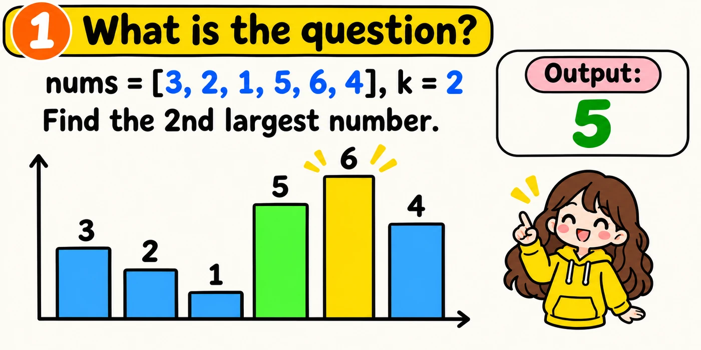
Repeated numbers count. In [3, 3, 1], the 2nd largest number is 3.
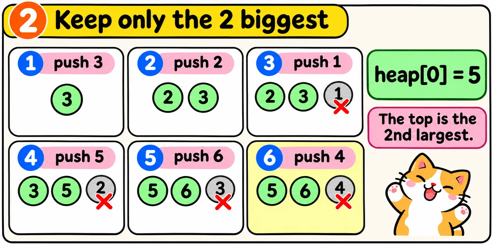
This is the same idea as Kth Largest Element in a Stream.
Tap Build it to see how I would write and explain this in an interview.
The one idea to remember
Write the whole function from memory. The comments explain each job. A failed test gives a hint instead of the answer.
The start and the last line are already written. Fill in the loop body. Start at the left edge.
import heapqdef findKthLargest(nums, k): heap = [] for num in nums:
return heap[0]
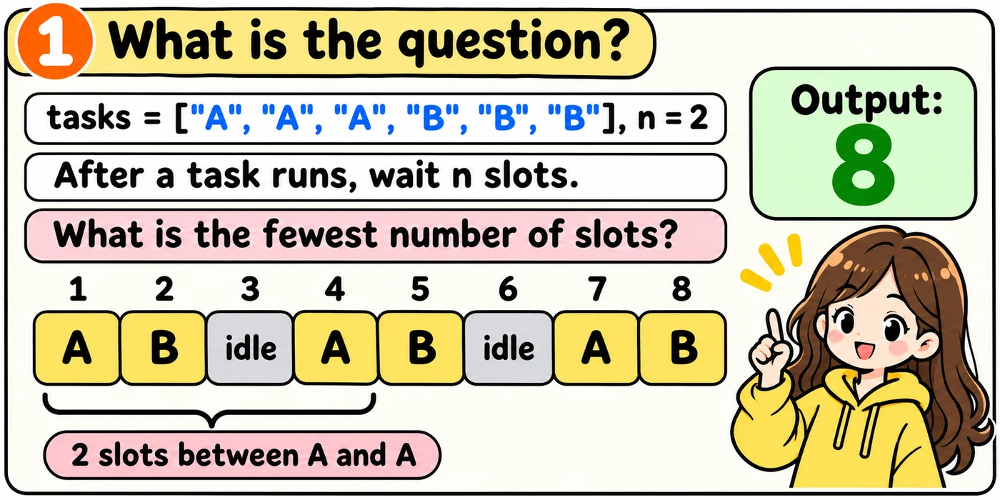
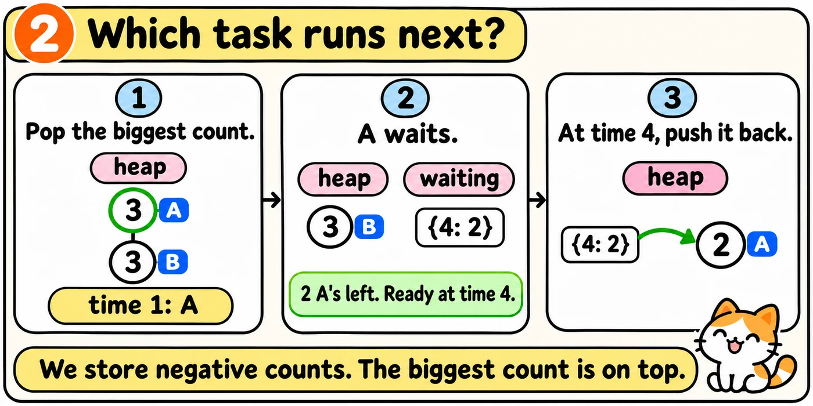
We run the task with the most copies left, because it is the hardest to fit in later. The heap holds only counts, because the letters do not matter.
After a task runs, we put it in a dictionary called waiting. The key is ready, the first time the task can run again, which is time + n + 1. The value is left, the number of copies left.
Let's watch the code run on the example. Press Next to move one step.
import heapqfrom collections import Counterdef leastInterval(tasks, n): counts = Counter(tasks) # negatives make a max-heap heap = [] for count in counts.values(): heapq.heappush(heap, -count) # ready time: copies left waiting = {} time = 0 while heap or waiting: time += 1 # bring back a ready task if time in waiting: left = waiting[time] del waiting[time] heapq.heappush(heap, -left) # run the biggest count if heap: left = -heapq.heappop(heap) left -= 1 if left > 0: ready = time + n + 1 waiting[ready] = left return time
Tap Build it to see how I would write and explain this in an interview.
The one idea to remember
Write the whole function from memory. The comments explain each job. A failed test gives a hint instead of the answer.
The heap, waiting and time are already set up. Fill in the two gaps inside the loop. Start each gap at the left edge.
import heapqfrom collections import Counterdef leastInterval(tasks, n): counts = Counter(tasks) # negatives make a max-heap heap = [] for count in counts.values(): heapq.heappush(heap, -count) # ready time: copies left waiting = {} time = 0 while heap or waiting: time += 1
return time
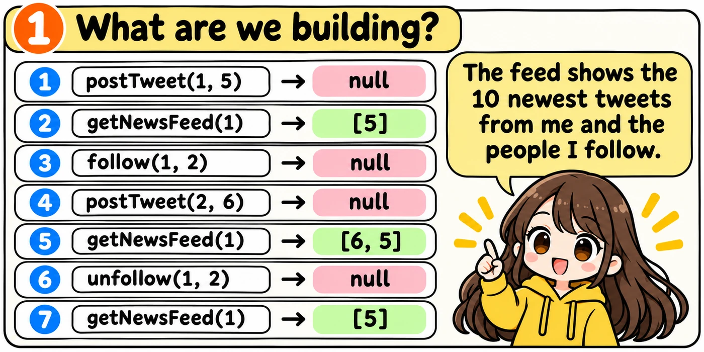
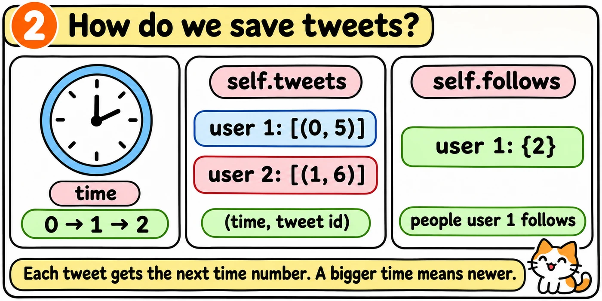
Each value in self.follows is a set, so follow and unfollow take O(1) time.
A user may not be in a dictionary yet. We check before using the user's list or set. If the list or set is missing, we make an empty one.
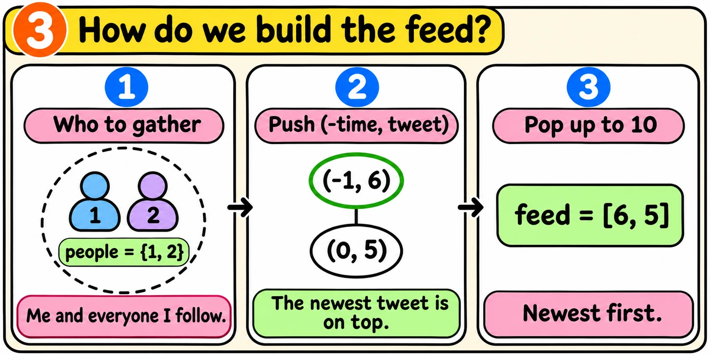
A person's tweets are stored oldest first, so only the last 10 can appear in the feed.
The line people |= self.follows[user] adds everyone the user follows to the set people. The set people is new, so this line does not change self.follows.
User 1 posted 15 tweets and follows nobody. How many items does getNewsFeed(1) push into the heap?
The heap holds (-1, 6) and (0, 5). Which tweet does the first pop give?
Tap Build it to see how I would write and explain this in an interview.
The one idea to remember
Write the whole class from memory. The comments explain each job. A failed test gives a hint instead of the answer.
Everything except the feed is already written. Fill in the two gaps in getNewsFeed. Start each gap at the left edge.
import heapqclass Twitter: def __init__(self): self.time = 0 self.tweets = {} self.follows = {} def postTweet(self, user, post): if user not in self.tweets: self.tweets[user] = [] pair = (self.time, post) self.tweets[user].append(pair) self.time += 1 def getNewsFeed(self, user): people = {user} if user in self.follows: people |= self.follows[user] heap = []
return feed def follow(self, user, other): if user not in self.follows: self.follows[user] = set() followed = self.follows[user] followed.add(other) def unfollow(self, user, other): if user not in self.follows: return followed = self.follows[user] followed.discard(other)
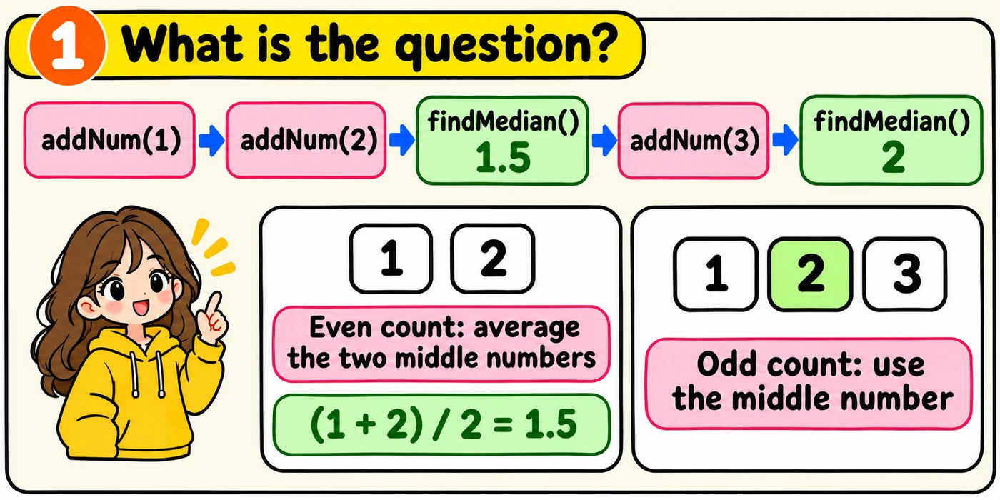
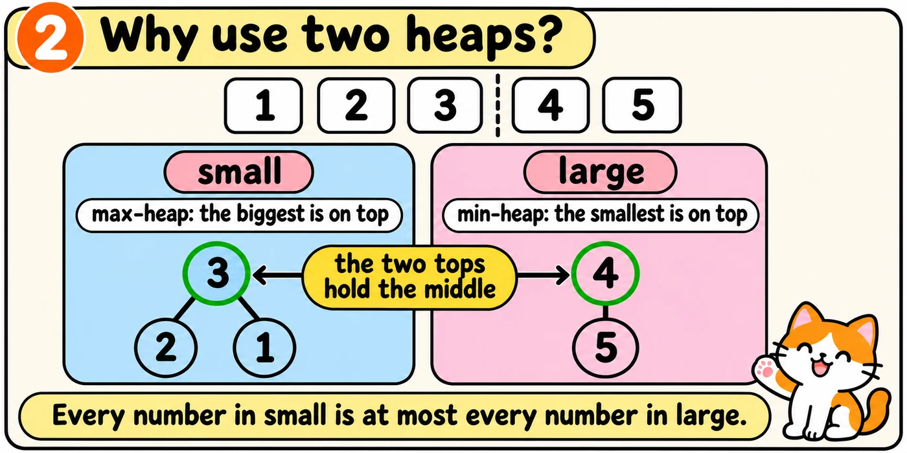
Reading a top takes O(1) time.
Python only has a min-heap, so small stores negative numbers. We used the same trick in Last Stone Weight.
We will add 1, 2 and 3. We will watch both heaps. Each stage adds one part of the code.
small = [-3, -2, -1]large = [4, 5]
For 1 to 5, the heaps look like the lists above. The heap small stores negative numbers. Its top, -3, means 3. We begin with two empty lists.
import heapqclass MedianFinder: def __init__(self): # small is a max-heap self.small = [] self.large = []
We want the biggest number in small. What do we read?
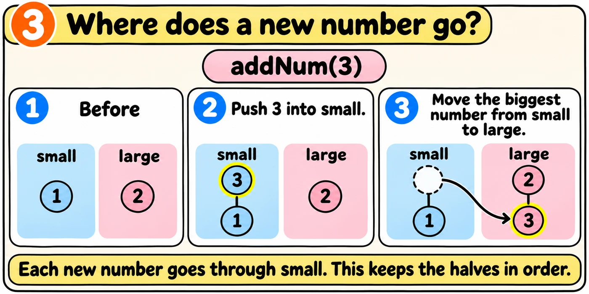
The names small and large refer to the same lists as self.small and self.large. A push changes the real heaps. The shorter names make the code easier to read.
import heapqclass MedianFinder: def __init__(self): # small is a max-heap self.small = [] self.large = [] def addNum(self, num): small = self.small large = self.large # pass num through small heapq.heappush(small, -num) top = -heapq.heappop(small) heapq.heappush(large, top)
The heap small holds 1. The heap large holds 2. We call addNum(0). Where does 0 end up after these lines?
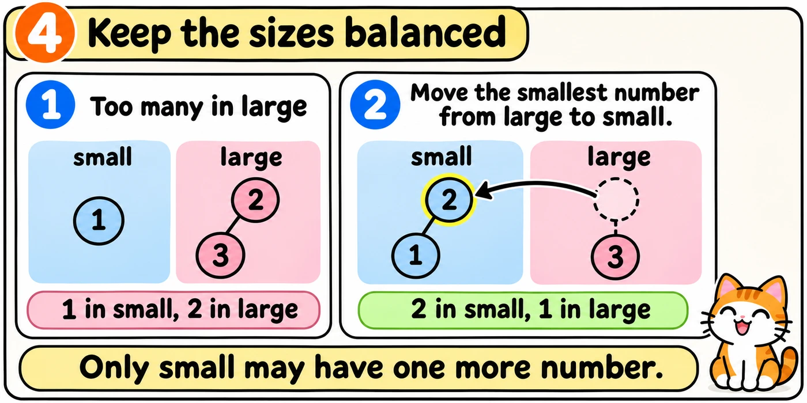
import heapqclass MedianFinder: def __init__(self): # small is a max-heap self.small = [] self.large = [] def addNum(self, num): small = self.small large = self.large # pass num through small heapq.heappush(small, -num) top = -heapq.heappop(small) heapq.heappush(large, top) # large may not be bigger if len(large) > len( top = heapq.heappop(small): large) heapq.heappush(small, -top)
After addNum(1), how many numbers are in each heap?
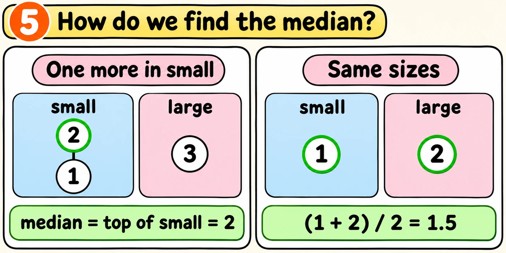
import heapqclass MedianFinder: def __init__(self): # small is a max-heap self.small = [] self.large = [] def addNum(self, num): small = self.small large = self.large # pass num through small heapq.heappush(small, -num) top = -heapq.heappop(small) heapq.heappush(large, top) # large may not be bigger if len(large) > len( top = heapq.heappop(small): large) heapq.heappush(small, -top) def findMedian(self): small = self.small large = self.large if len(small) > len( return -small[0] total = -small[0] + large[0] return total / 2large):
The heap small holds 1. The heap large holds 2. What does findMedian return?
Tap Build it to see how I would write and explain this in an interview.
The one idea to remember
Write the whole class from memory. The comments explain each job. A failed test gives a hint instead of the answer.
The class and __init__ are already written. Fill in the two method bodies. Start each one at the left edge.
import heapqclass MedianFinder: def __init__(self): # small is a max-heap self.small = [] self.large = [] def addNum(self, num):
def findMedian(self):